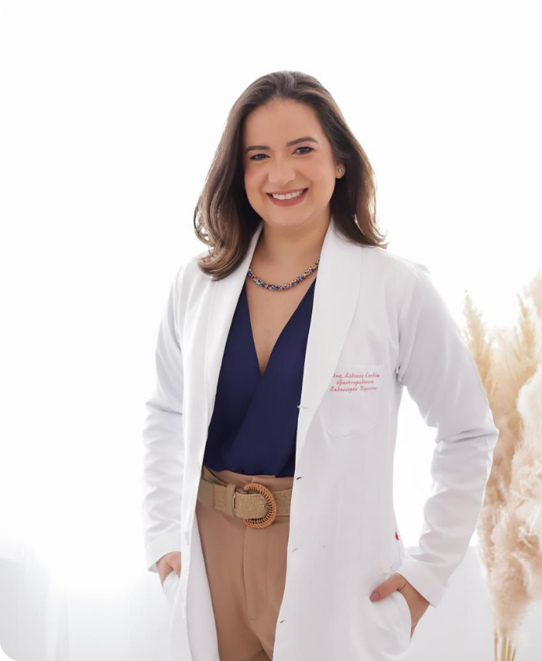

Vamos cuidar juntos
da saúde intestinal
da sua criança!
A Dra. Lidiane Landim é uma especialista em
gastropediatria e Endoscopia digestiva(adulto
e criança), formada nas principais escolas
médicas do país como USP e UNICAMP.
